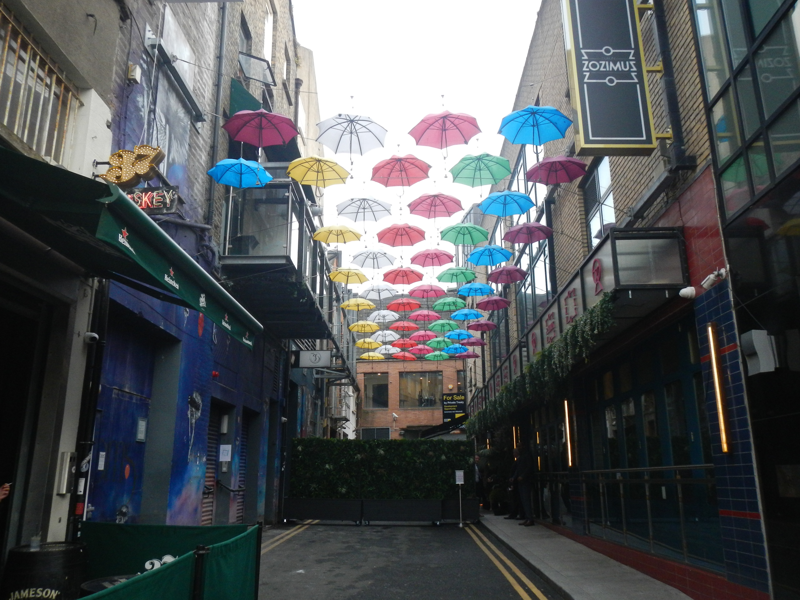

Dublin
Museums
EPIC The Irish Emigration Museum
The EPIC Museum is a great exhibition to see and interact with the idea of Irish expanding far beyond the borders of Ireland. Through the stories of Irish emigrants including famous athletes, comedians, scientists, musicians, and political leaders, you can really get a sense of how such a small island can create a deep, vast culture worldwide. Through interactive touch screens, video, audio, and individuals’ stories, the experience is quite engaging. My favorite part was being able to stamp my EPIC passport as I traveled through each exhibit. To ensure you get the best deal, you can book tickets online through the EPIC Irish Emigration Museum website.
I thought that this quote shown in the exhbit really encapsulates the history of Irish emigration and its impact on the world today:
“After all, emigration is not just a chronicle of sorrow and regret. It is also a powerful story of contribution and adaptation. In fact, I have become more convinced each year that this great narrative of dispossession and belonging, which so often had its origins in sorrows and leave-taking, has become, with a certain amount of historic irony, one of the treasures of our society.” –Mary Robinson (February 2, 1995)
The National Museum - Archeology
The National Museum of Archaeology in Ireland offers a journey into the ancient past of this storied island. With a rich collection that spans from prehistoric times to the late medieval period, visitors can explore the several artifacts and relics that define Ireland's history including beautifully detailed Celtic crosses and chalices. I spent a rather short time here since I am less interested in archaeology and natural history when compared to other historical displays. However, I was captivated by the exhibit featuring the remarkably preserved bog bodies, offering a unique and eerie glimpse into ancient rituals and lives. If you are at all interested, admission is completely free!

The National Gallery of Ireland
The National Gallery of Ireland offers a diverse collection that spans centuries and styles, providing a rich visual journey through the history of art. I spent most of my time admiring the Modern Art sections in the European Art 1850–1950 exhibit and the Millennium Wing Studio, which feature works from greater Europe. There was also the Turing Heads temporary exhbit showcasing contemporary Irish artists. While admission to the gallery is free, this special exhibit requires that you purchase tickets in advance, so I was not able to check it out. If you would like to see it, make sure to plan ahead.


The Little Museum of Dublin
Restaurants
Alma
A quaint restaurant tucked away in the Portobello area serving classic breakfast options with an Argentinian twist serves incredible brunch. There is limited seating, so if you want to make plans to go I would recommend booking a table! I would definitely recommend the Choripan Argento for a flavorful and satifying meal.
The Ramen Bar
Located on Williams Street, this ramen bar is nestled in a busy and happening area of downtown, yet the calm, relaxing atmosphere makes you feel tucked away from the chaos. While the mood lighting, comfortbale seating, and attentive service create a calming ambiance, the food is really the star of the show. There are plenty of authentic appextizers to try and share, but I ordered the house ramen dish and it was incredible. If you want to check out other options more in depth, look at their online menu here!
Mani
On Drury Street, you can get delicious pizza by the slice at Mani. The Margherita slice may have been the best I've ever had! There are also picnic tables outside to enjoy your meal on the street.
Masa
If you are in the mood for Mexican food, Masa will not disappoint. It has a great, fun atmosphere with lively music and delicious food and drinks. Due to its popularity and limited seating, I would try to get there early to ensure you get a spot. I would highly recommend trying the tacos al pastor. They were delicious!